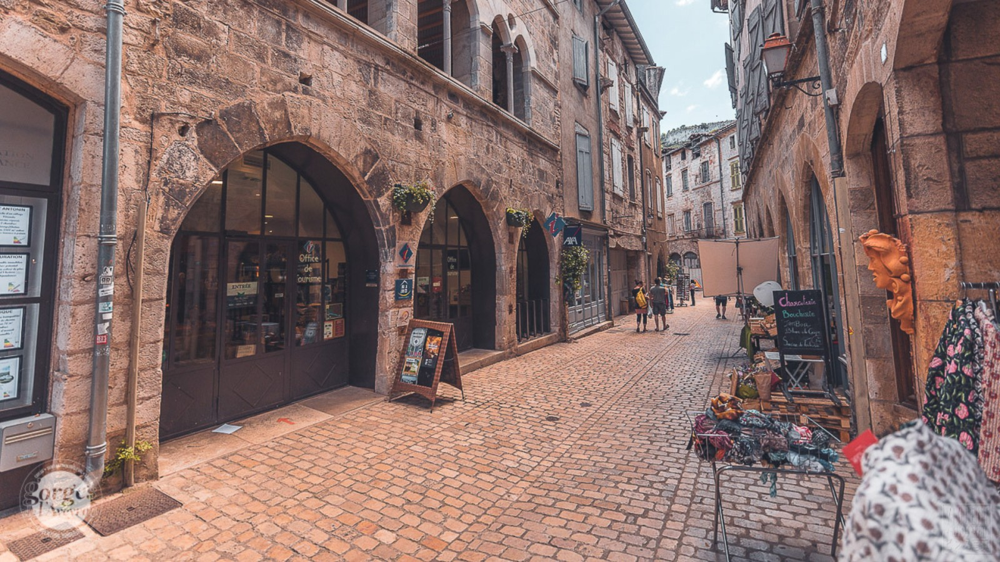
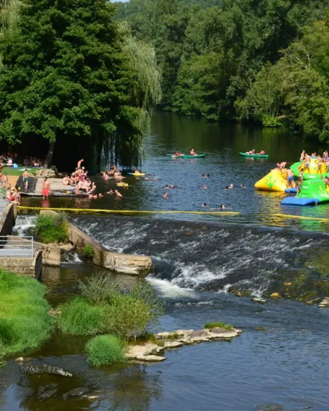

Saint Antonin Noble Val - Gîte Ô Nature
Votre location de vacances proche de Saint-Antonin-Noble-Val
Situé à Varen dans le Tarn-et-Garonne, le Gîte Ô Nature vous accueille à seulement 10 minutes de Saint-Antonin-Noble-Val, l'un des plus beaux villages médiévaux d'Occitanie. Nichée au cœur des Gorges de l'Aveyron, cette cité médiévale est réputée pour son marché dominical, ses ruelles pittoresques, ses maisons anciennes, ses restaurants et son patrimoine exceptionnel.
Le gîte constitue un point de départ idéal pour découvrir la région tout en profitant d'un environnement calme et verdoyant.

Saint-Antonin-Noble-Val séduit chaque année des milliers de visiteurs grâce à son authenticité.
- Marché dominical réputé dans toute la région
- Maisons médiévales remarquablement conservées
- Nombreux restaurants et terrasses
- Artisans et galeries d'art
- Animations estivales
- Découverte des Gorges de l'Aveyron
Depuis le gîte, vous rejoignez facilement le centre historique pour profiter des commerces, restaurants et animations.
Canoë, randonnée et activités nature
Les Gorges de l'Aveyron offrent un cadre exceptionnel pour les activités de plein air.
- Canoë-kayak sur l'Aveyron
- Baignade en rivière
- Randonnées balisées
- Escalade
- VTT
- Parcs aventure
- Pêche
Le Gîte Ô Nature est idéalement situé pour accéder rapidement à l'ensemble de ces activités.
Visiter les plus beaux villages autour de Saint-Antonin-Noble-Val
Durant votre séjour, découvrez également :
- Najac et sa forteresse royale
- Cordes-sur-Ciel
- Bruniquel et ses châteaux
- Penne et sa forteresse
- Caylus et son patrimoine médiéval
- Laguépie et les vallées de l'Aveyron
Ces sites touristiques majeurs se trouvent à quelques kilomètres seulement de votre hébergement.
Pourquoi choisir le Gîte Ô Nature ?
- À seulement 10 minutes de Saint-Antonin-Noble-Val
- Terrasse et jardin
- Climatisation
- Wi-Fi gratuit
- Parking privé
- 2 à 4 personnes
- Animaux acceptés
- Environnement calme et naturel
Pour un week-end ou des vacances en famille, en couple ou entre amis, le Gîte Ô Nature constitue une adresse idéale pour découvrir Saint-Antonin-Noble-Val et les Gorges de l'Aveyron.
Réserver votre séjour
Gîte Ô Nature
230 Route de Laumière
82330 Varen
Téléphone : 06 87 10 51 30
Email : gite.onature@gmail.com
Photos Saint Antonin Noble Val



